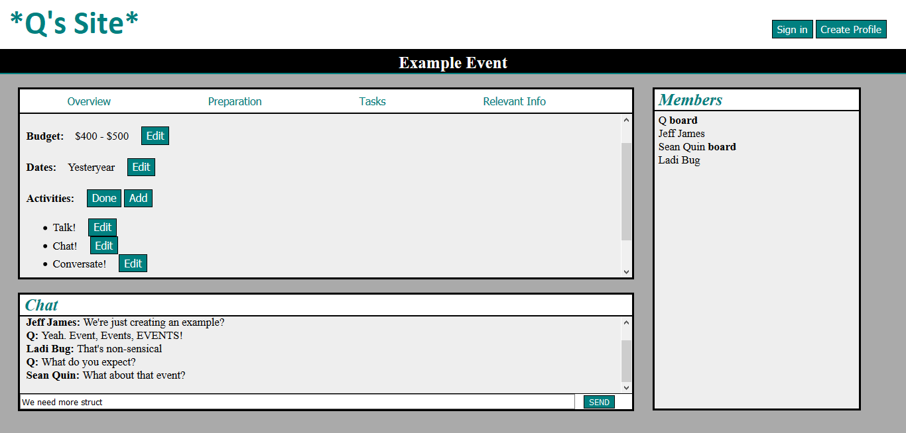
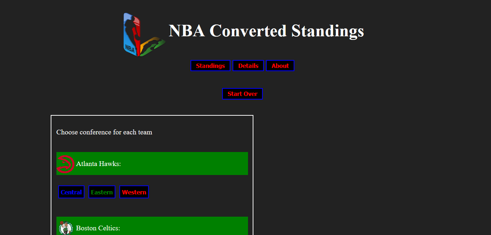

While working as part of the Language and Information Technologies (LIT) research group, I helped on research to use NLP to attain pedigrees from cancer patients. My primary tasks involved verifying/pre-processing data from Amazon Mechanical Turk and then creating a model that predicted the names, genders and ages of family members presented in the surveys.
Another project at LIT involved helping produce an accepted paper into the International Joint Conference on Natural Language Processing (IJCNLP) 2017 titled Identity Deception Detection by Verónica Pérez-Rosas, Quincy Davenport, Anna Dai, Mohamed Abouelenien, and Rada Mihalcea. My primary task was simply verifying and pre-processing data.
Another notable project while studying at the University of Michigan involved a group and I researching and creating a prediction system that completed a task given by a previous Stack Overflow competition for predicting a new post's tags. I primarily worked on creating a Naive Bayes tag predictor with Python.
A final past project I want to note was during a web development class. In a group of 3, we designed a website for online photo albums. We all were able to work equally on both front-end and back-end using JS, HTML, and CSS along with Python's Django framework and MySQL.
I'm currently working on two personal projects. The first has been a way to accomplish two tasks: learn PHP and assist my group of friends with event planning. The repository is private for this project, but below is a sample of my work.
The other project is a recent one. I'm interested in the NBA and I, along with others, have a certain concern with it. Below is an image, but I encourage you to check out my 'standings' repository for more details. Right now, I have only needed Javascript, HTML, and CSS for the task.
Programming Languages